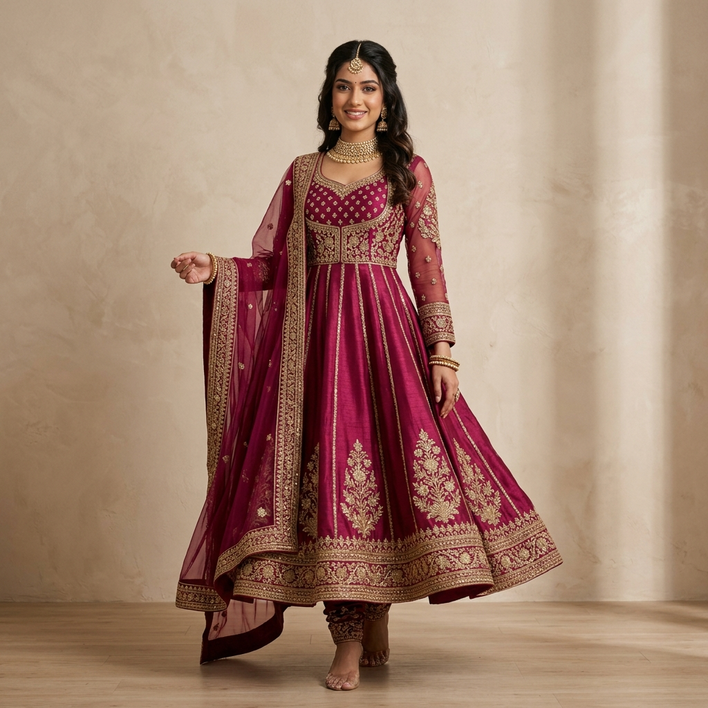

Veloura was born in Chennaiout of a deep reverence for India’s timeless handloom traditions, reimagining silk weaving for the discerning modern woman.

Founded in 2020 in the pink city of Jaipur, Veloura began with a singular vision: to preserve the sacred art of handloom weaving while infusing modern elegance into every silhouette.
We work directly with over 1,200 master artisan families across Kanchipuram, Varanasi, Mysore, and Bengal. Every thread of pure mulberry silk and real silver-gold zari is woven with unmatched dedication, taking anywhere from 45 to 180 days per saree.
Our pieces are not merely garments — they are wearable heirlooms, capturing rich cultural stories to be cherished today and passed down to future generations.
Explore the intricate, time-honored handloom techniques practiced by our master artisans.
Woven using 3 separate wooden shuttles to interlock body and border seamlessly. Features tested gold zari motifs of peacocks, rudraksha, and temple spires.
Each floral motif is individually hand-woven without loose threads on the reverse side, taking over 90 days of intense pit-loom handwork.
Hand-stitched metallic ribbons and beaten gold wire appliqué crafted by royal court embroidery ateliers in the heart of Jaipur.
Woven from high-twist 100% pure Mulberry silk yarn with 24K gold zari borders, offering an ethereal drape and featherlight sheen.
Pure handloom silk sarees are living textiles. With mindful care, your Veloura piece will retain its royal sheen, vibrant color, and gold zari brilliance for over a century.

Guided by authenticity, ethical artisan partnerships, and uncompromising luxury.
Every saree comes certified with Silk Mark authentication, verifying 100% pure mulberry silk and genuine zari threadwork.
We ensure sustainable livelihoods and healthcare for master weavers and their families across India’s handloom clusters.
Our silk threads are dyed using natural, eco-conscious pigments that protect both the fabric texture and our waterways.
Enjoy one-on-one virtual or in-atelier styling sessions with our master drapers for festive, bridal, and trousseau edits.